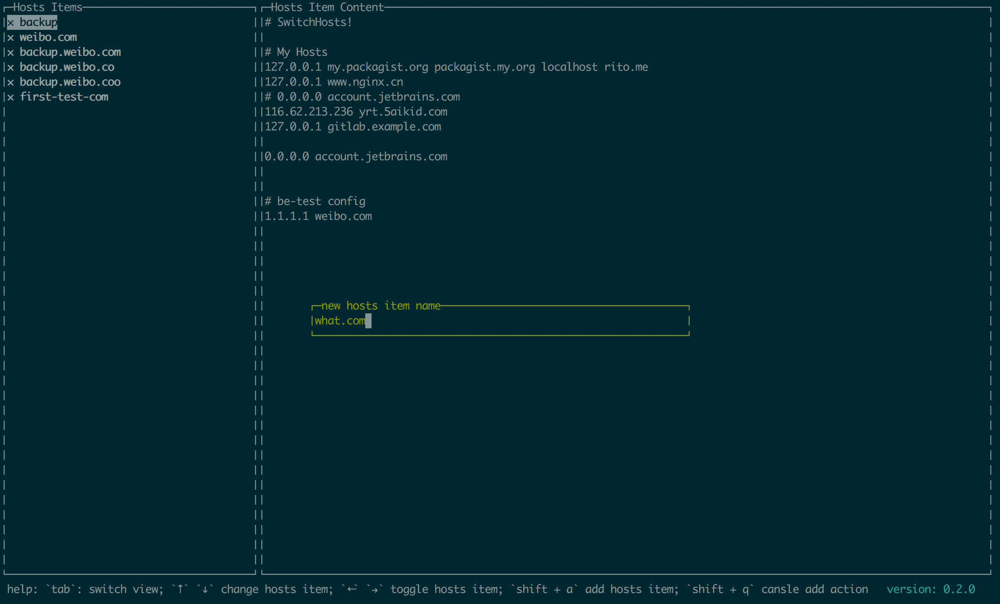

gohost -- go 开发的命令行hosts配置管理工具
前几天在微博上看到有人推荐了lazygit这个工具，让人眼前一亮，什么时候命令行也可以这么抢到了，🤣，调研了下，发现它使用了gocui，使用它可以做出来很多很炫的命令行工具。
现有的hosts工具里面也有switchosts!，但我是用的时候发现他还是有bug，也只能用在界面化平台。想了下，准备着手搞一个命令行的hsots配置工具，这个类库完全可以满足。
界面设计
在界面设计上，还是做个copycat，抄袭switchosts!的，分两栏，左侧是hosts分组，右边儿是当前聚焦hosts分组内容，控制开关放在左侧，如下所示。左侧开关控制每个组的开启关闭与否，系统当前的hosts是左侧所有打开hosts的集合。1
2
3
4
5
6
7
8*------*-------------------*
|×name1|# hosts for name2 |
|√name2|1.1.1.1 a.com |
|×name3|0.0.0.0 abc.com |
| | |
| | |
| | |
*------*-------------------*
hosts实现原理
原理和switchosts!的类似，通过修改系统hosts文件来达到目的，每次修改的变动都会实时的体现到系统hosts文件中，这样就实现了控制hosts的目的。1
2
3
4
5
6
7
8
9hosts 配置软件 系统hosts
*------*-------------------* *-------------------------*
|×name1|# hosts for name2 | |# hosts for name2 |
|√name2|1.1.1.1 a.com | |1.1.1.1 a.com |
|√name3|0.0.0.0 abc.com | |0.0.0.0 abc.com |
| | | => |# hosts for name3 |
| | | |127.0.0.1 localhost |
| | | | |
*------*-------------------* *-------------------------*
gocui为我们提供了什么
gocui是一个很强大的库，就像他所说的那样Go Console User Interface，提供一个命令行用户界面。他为我们赋予了控制刷新terminal的能力，比如将terminal分为多个view（分区），每个view可以独立控制刷新，响应键盘的事件，所以，只要你愿意，甚至可以做出一些简单的小游戏。
gohosts
目前为止gohosts的功能基本已开发完成，主要有功能就是切换hosts，有如下交互：
- 聚焦左侧view时，通过
shift + a组合键，创建新的hosts分组。 - 通过
tab键，切换左侧、右侧view。 - 聚焦弹层view时，当创建新的hosts分组的时候，会进入弹层view，输入内容后，按下enter键生效。
- 聚焦左侧view时，通过上下箭头切换hosts分组。
- 聚焦左侧view时候，通过左右箭头切换hosts分组开关。
gohosts实现
因为要修改hosts，所以运行程序的时候也必须要使用root权限，初次运行的时候，会自动进行初始化，生成backup分组，并将系统当前已有hosts内容放入其中。
gohosts的配置文件会放在运行用户的家目录下面的.gohost文件夹下，每次启动的时候，会从其中读取配置文件，并展现出来。另外，为了做兼容，区分了windows系统和linux系统，通过getUserHome函数获取用户家目录。另外作为一个copycat，从switchosts!哪里了解到，有的windows系统盘不装在C盘，通过getWinSystemDir获取windows的系统盘目录，做到尽可能的全平台、多环境兼容。1
2
3
4
5
6
7
8
9
10
11
12
13
14
15
16
17
18
19func getUserHome() string {
home := ""
if runtime.GOOS == "windows" {
home = os.Getenv("USERPROFILE")
} else {
home = os.Getenv("HOME")
}
return home
}
func getWinSystemDir() string {
dir := ""
if runtime.GOOS == "windows" {
dir = os.Getenv("windir")
}
return dir
}
另外这里2次使用了go协程来检验语法，启动软件的时候，启动协程，每隔50ms检测一次输入的内容是否合规，如下所示，协程中是个死循环，如果不合规，标红展示。1
2
3
4
5go func() {
for range time.Tick(time.Millisecond * 50) {
// do something
}
}()
比如我们输入hosts配置的时候，必须满足下面3中正则，不然会提示哪一行有错误。1
2
3"^(?:[0-9]{1,3}\\.){3}[0-9]{1,3}(?:[ ]{1,})(?:[ 0-9a-zA-Z._-]{1,}){1,}$"
"^[ ]*$"
"^#.*"
还有我们输入新建hosts分组的时候，如果hosts分组名字已经存在了，或者hosts分组名字超过长度了，也会在输入弹层view中提示标红。
golang的协程处理这些内容简直得天独厚，处理起来很轻松，也很简单高效。
另外比较麻烦的地方就是控制光标焦点了，左侧增加hosts分组的时候，还有当分组个数超过最大显示行数的时候，这就相当用画布、画框的情况，当移动焦点的时候，需要对应的做出移动画布还是移动画框，哈哈，有兴趣的可以看看代码中的逻辑。
gohosts效果展示


总结
自己已经实际使用了几天了，还算好用，比较遗憾的就是不支持中文，中文会出现显示不全的问题，这是依赖库导致的，改起来估计比较费劲，不过对于hosts来说，全英文也没问题。
另外这是第一次真正的使用golang做出一些有用的东西，感觉还挺不错，准备稍微闲点儿了，好好研究下这个依赖库gocui。
- 本文链接：http://www.5aikid.com/2018/08/23/gohost-go-开发的命令行hosts配置管理工具/
- 版权声明：The author owns the copyright, please indicate the source reproduced
分享